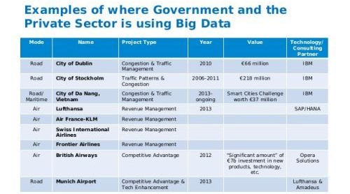

Big Data Applications
Links:
1-Communications & Media and Entertainment:
*Challenges:
Since consumers expect rich media on-demand in different formats and a variety of devices, some Big Data challenges in the communications, media, and entertainment industry include:
- Collecting, analyzing, and utilizing consumer insights
- Leveraging mobile and social media content
- Understanding patterns of real-time, media content usage
Applications of Big Data in the Communications & Media and Entertainment :
Organizations in this industry simultaneously analyze customer data along with behavioral data to create detailed customer profiles that can be used to:
- Create content for different target audiences
- Recommend content on demand
- Measure content performance
A case in point is the Wimbledon Championships (YouTube Video) that leverages Big Data to deliver detailed sentiment analysis on the tennis matches to TV mobile and web users in real-time.
Spotify an on-demand music service uses Hadoop Big Data analytics to collect data from its millions of users worldwide and then uses the analyzed data to give informed music recommendations to individual users.Amazon Prime, which is driven to provide a great customer experience by offering video, music, and Kindle books in a one-stop-shop also heavily utilizes Big Data.
Big Data Providers in this industry include Infochimps Splunk Pervasive Software and Visible Measures.
2-Healthcare:
*Challenges:
The healthcare sector has access to huge amounts of data but has been plagued by failures in utilizing the data to curb the cost of rising healthcare and by inefficient systems that stifle faster and better healthcare benefits across the board.
This is mainly because electronic data is unavailable, inadequate, or unusable. Additionally, the healthcare databases that hold health-related information have made it difficult to link data that can show patterns useful in the medical field.Other challenges related to Big Data include the exclusion of patients from the decision-making process and the use of data from different readily available sensors.
Applications of Big Data in the Healthcare Sector:
Some hospitals are using data collected from a cell phone app, from millions of patients, to allow doctors to use evidence-based medicine as opposed to administering several medical lab tests to all patients who go to the hospital. A battery of tests can be efficient, but it can also be expensive and usually ineffective.
Free public health data and Google Maps have been used by the University of Florida to create visual data that allows for faster identification and efficient analysis of healthcare information, used in tracking the spread of chronic disease.
Obamacare has also utilized Big Data in a variety of ways.
Big Data Providers in this industry include Recombinant Data Humedica Explorys and Cerner.
3-Education:
*Challenges:
From a technical point of view, a significant challenge in the education industry is to incorporate Big Data from different sources and vendors and to utilize it on platforms that were not designed for the varying data.
From a practical point of view, staff and institutions have to learn new data management and analysis tools.
On the technical side, there are challenges to integrating data from different sources on different platforms and from different vendors that were not designed to work with one another.
Politically, issues of privacy and personal data protection associated with Big Data used for educational purposes is a challenge.
Applications of Big Data in Education:
Big data is used quite significantly in higher education. For example, The University of Tasmania. An Australian university with over 26000 students has deployed a Learning and Management System that tracks, among other things, when a student logs onto the system, how much time is spent on different pages in the system, as well as the overall progress of a student over time.
In a different use case of the use of Big Data in education, it is also used to measure teacher’s effectiveness to ensure a pleasant experience for both students and teachers. Teacher’s performance can be fine-tuned and measured against student numbers, subject matter, student demographics, student aspirations, behavioral classification, and several other variables.
On a governmental level, the Office of Educational Technology in the U. S. Department of Education is using Big Data to develop analytics to help correct course students who are going astray while using online Big Data courses. Click patterns are also being used to detect boredom.
Big Data Providers in this industry include Knewton and Carnegie Learning and MyFit/Naviance.
4-Government:
*Challenges:
In governments, the most significant challenges are the integration and interoperability of Big Data across different government departments and affiliated organizations.
Applications of Big Data in Government:
In public services, Big Data has an extensive range of applications, including energy exploration, financial market analysis, fraud detection, health-related research, and environmental protection.
Some more specific examples are as follows:
Big data is being used in the analysis of large amounts of social disability claims made to the Social Security Administration (SSA) that arrive in the form of unstructured data. The analytics are used to process medical information rapidly and efficiently for faster decision making and to detect suspicious or fraudulent claims.
The Food and Drug Administration (FDA) is using Big Data to detect and study patterns of food-related illnesses and diseases. This allows for a faster response, which has led to more rapid treatment and less death.
The Department of Homeland Security uses Big Data for several different use cases. Big data is analyzed from various government agencies and is used to protect the country.
Big Data Providers in this industry include Digital Reasoning, Socrata, and HP.
5-Insurance:
*Challenges:
Lack of personalized services, lack of personalized pricing, and the lack of targeted services to new segments and specific market segments are some of the main challenges.
In a survey conducted by Marketforce challenges identified by professionals in the insurance industry include underutilization of data gathered by loss adjusters and a hunger for better insight.
Applications of Big Data in the Insurance:
Big data has been used in the industry to provide customer insights for transparent and simpler products, by analyzing and predicting customer behavior through data derived from social media, GPS-enabled devices, and CCTV footage. The Big Data also allows for better customer retention from insurance companies.
When it comes to claims management, predictive analytics from Big Data has been used to offer faster service since massive amounts of data can be analyzed mainly in the underwriting stage. Fraud detection has also been enhanced.
Through massive data from digital channels and social media, real-time monitoring of claims throughout the claims cycle has been used to provide insights.
Big Data Providers in this industry include Sprint, Qualcomm, Octo Telematics, The Climate Corp.
6-Transportation:
*Challenges:
In recent times, huge amounts of data from location-based social networks and high-speed data from telecoms have affected travel behavior. Regrettably, research to understand travel behavior has not progressed as quickly.
In most places, transport demand models are still based on poorly understood new social media structures.
Applications of Big Data in the Transportation:
Some applications of Big Data by governments private organizations and individuals include:
- Governments use of Big Data: traffic control route planning intelligent transport systems congestion management
- Private-sector use of Big Data in transport: revenue management technological enhancements logistics and for competitive advantage
- Individual use of Big Data includes route planning to save on fuel and time, for travel arrangements in tourism, etc

7-Energy & Utilities:
*Challenges:
The image below shows some of the main challenges in the energy and utility industry.
Applications of Big Data in the Energy and Utility:
Smart meter readers allow data to be collected almost every 15 minutes as opposed to once a day with the old meter readers. This granular data is being used to analyze the consumption of utilities better, which allows for improved customer feedback and better control of utilities use.
In utility companies, the use of Big Data also allows for better asset and workforce management, which is useful for recognizing errors and correcting them as soon as possible before complete failure is experienced.
Big Data Providers in this industry include Alstom Siemens ABB and Cloudera.